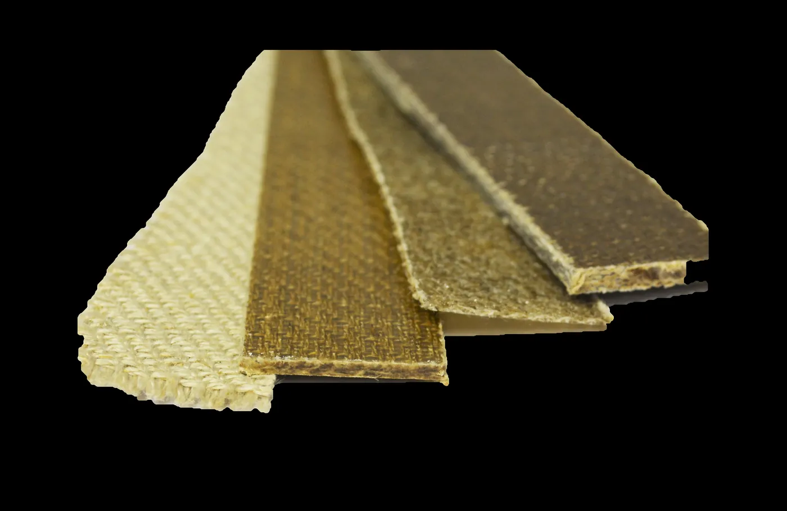

Route
01
Natural-fibre composites
Locally sourced natural fibres such as kenaf, jute, hemp, flax and bamboo replace synthetic glass fibre in non-structural and semi-structural components.
Home / Technology
Natural-fibre and hybrid natural/synthetic composites with functional gradation: strong where it matters, light and renewable everywhere else.
Our approach
Route
01
Locally sourced natural fibres such as kenaf, jute, hemp, flax and bamboo replace synthetic glass fibre in non-structural and semi-structural components.
Route
02
Natural-fibre plies are interlaminated with high-performance carbon, glass or aramid fibre, putting strength exactly where the load path needs it — for demanding structural applications.
Hybrid laminate · exploded view
Fig. 01
Highlight — Functional gradation
Fibre type, orientation and placement are graded through the thickness, so high-performance material goes only where performance is required. That is where the cost and carbon saving comes from.
Why NaturoFiber
| Parameter | Conventional steel | Conventional FRP | NaturoFiber |
|---|---|---|---|
| Reinforcement | Steel / metallic | Glass, carbon or aramid fibre | Natural fibre + hybrid architectures |
| Corrosion | Needs protection and maintenance | Generally corrosion-resistant | Corrosion-resistant polymer composite |
| Weight | Heavy — handling and transport penalty | Lightweight, high specific strength | Lightweight hybrid elements, high specific strength |
| Carbon footprint | Energy-intensive production | Relies on energy-intensive synthetic fibre | Renewable fibre content, LCA-benchmarked |
| Material tailoring | Grade and section selection | Fibre type, orientation and lay-up | Plus hybridisation and functional gradation |
| Ductility | Ductile, but corrosion-prone | Can be brittle | Hybrid lay-up and toughened matrix for better energy absorption |
Swipe the table sideways on a phone to compare →
Sustainability

Tell us what you are working on. We reply within two working days.